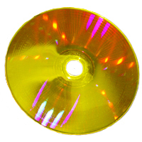

Optical Disks
What are optical disks
On optical discs such as compact discs (CDs) and digital videodiscs (DVDs), information is stored as a series of lands, or flat areas, and pits.
How do they work
Low-power laser beams are used to record and retrieve digital (binary) data. In optical-storage technology, a laser beam encodes digital data onto an optical, or laser, disk in the form of tiny pits arranged in a spiral track on the disk’s surface. A low-power laser scanner is used to “read” these pits, with variations in the intensity of reflected light from the pits being converted into electric signals. This technology is used in the compact disc, which records sound; in the CD-ROM (compact disc read-only memory), which can store text and images as well as sound; in WORM (write-once read-many), a type of disk that can be written on once and read any number of times; and in newer disks that are totally rewritable.Sizes
Optical discs are usually between 7.6 and 30 cm (3 to 12 in) in diameter, with 12 cm (4.75 in) being the most common size. The so-called program area that contains the data commonly starts 25 millimetres away from the center point.A typical disc is about 1.2 mm (0.05 in) thick, while the track pitch (distance from the center of one track to the center of the next) ranges from 1.6 μm (for CDs) to 320 nm (for Blu-ray discs).Generations
1st generation
Initially, optical discs were used to store broadcast-quality analog video, and later digital media such as music or computer software. The LaserDisc format stored analog video signals for the distribution of home video, but commercially lost to the VHS videocassette format, due mainly to its high cost and non-re-recordability; other first-generation disc formats were designed only to store digital data and were not initially capable of use as a digital video medium. Most first-generation disc devices had an infrared laser reading head. The minimum size of the laser spot is proportional to the wavelength of the laser, so wavelength is a limiting factor upon the amount of information that can be stored in a given physical area on the disc. The infrared range is beyond the long-wavelength end of the visible light spectrum, so it supports less density than shorter-wavelength visible light. One example of high-density data storage capacity, achieved with an infrared laser, is 700 MB of net user data for a 12 cm compact disc.Types of first generation optical disks
- CDs
- Audio CD
- Video CD (VCD)
- Super Video CD
- CD Video
- Magneto-optical disc
- GD-ROM
- Laser Disk
-
Laser disk and dvd side by side

-
Super Video CD

-
GD-Rom

-
CD

2nd generation
Second-generation optical discs were for storing great amounts of data, including broadcast-quality digital video. Such discs usually are read with a visible-light laser (usually red).In the DVD format, this allows 4.7 GB storage on a standard 12 cm, single-sided, single-layer disc; alternatively, smaller media, such as the DataPlay format, can have capacity comparable to that of the larger, standard compact
Types of second generation optical disks
- DVDs
- DVD-Audio
- DualDisk
- Digital Video Express
- DVD-RAM
- Enhanced Versatile Disc
- Super Audio CD
- Ultra Density Optical

3rd generation
Third-generation optical discs are used for distributing high-definition video and videogames and support greater data storage capacities, accomplished with short-wavelength visible-light lasers and greater numerical apertures. Blu-ray Disc and HD DVD uses blue-violet lasers and focusing optics of greater aperture, for use with discs with smaller pits and lands, thereby greater data storage capacity per layer. In practice, the effective multimedia presentation capacity is improved with enhanced video data compression codecs such as H.264/MPEG-4 AVC and VC-1.
Types of third generation optical disks
- Blu-ray (up to 400 GB - experimental
- HD DVD (discontinued disc format, up to 51 GB triple layer)
- HD VMD
4th generation
The following formats go beyond the current third-generation discs and have the potential to hold more than one terabyte (1 TB) of data and at least some are meant for cold data storage in data centers:
- Archival Disc
- Holographic Versatile Disc
- Ultra HD Bluray
- LS-R
- Stacked Volumetric Optical Disk
- 5D DVD
- 3D optical data storage
Image of an Holographic versatile disc
